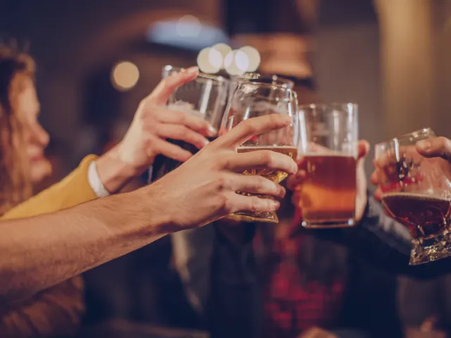
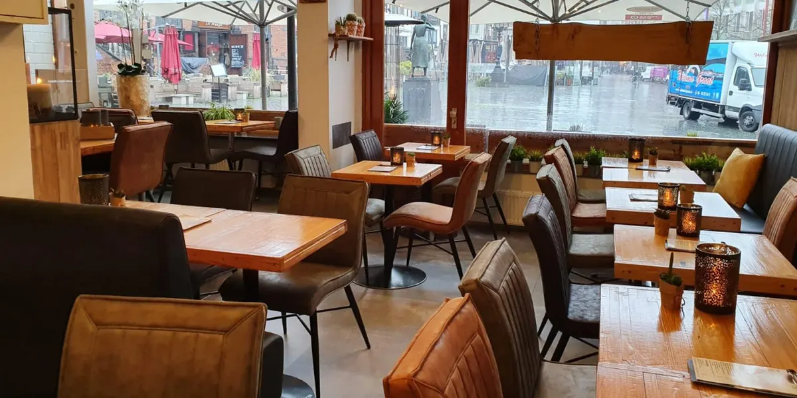

Hapje eten en drinken in Nijmegen
Gepubliceerd op 28 september 2022, bijgewerkt op 20 februari 2024
Onderdeel van de gids Restaurants in Nijmegen

Nijmegen is een erg grote stad, daarom gaan veel mensen een dagje naar Nijmegen toe. Op zo’n gezellig dagje doet men van alles. Shoppen, wandelen, kletsen, een interactieve activiteit en last but not least eten en wat drinken. Als u naar het gezellige Nijmegen gaat voor een middagje heeft u veel keuze, rond de 400 verschillende horecagelegenheden om precies te zijn. Dit is natuurlijk erg positief, maar we kunnen ons voorstellen dat je door de bomen het bos niet meer kan zien.
Lekker op stap
Stel u gaat lekker een dagje stappen met vrienden en/of vriendinnen, dan gaat men meestal op een terrasje zitten en nemen ze een verrukkelijk appelgebakje of een heerlijke uitsmijter. Daarbij een lekker drankje om heerlijk te genieten. Voor deze mensen is een terrasje perfect zeker als het lekker weer is, maar ook met minder weer hebben vandaag de dag een heater of een ouderwets dekentje.
Je hebt ook de stoere mannen en vrouwen die na een dag actief bezig te zijn geweest lekker royaal willen dineren. Een lekker mals stukje vlees een biertje en napraten over de dag. Wel lekker verwarmd binnen en met een gezellig sportevenement op de achtergrond. Voor deze liefhebbers is een sportcafé of een gewoon café perfect. Volop nagenieten van een productief afgeronde dag samen met vrienden en vriendinnen. Dat gaat natuurlijk soms tot laat door in de avond.
Heerlijk genieten
Het doel kan natuurlijk ook zijn lekker eten en drinken. Er hoeft niet per se een activiteit aan toegevoegd worden. Misschien wilt u wel gewoon lekker romantisch dineren met uw partner of eventuele toekomstige partner. Daarvoor zijn er ook gelukkig genoeg restaurants. Een mooie setting, een leuk nummertje op de achtergrond en een romantische avond is zo goed als gegarandeerd.
Voor de inwoner van Nijmegen is bij vele restaurants bezorgen ook mogelijk. Zeker sinds de Covid-pandemie is het aantal restaurants dat thuisbezorgd gigantisch toegenomen. Gelukkig is dit niet weggegaan en kunt u na een lange werkdag heerlijk relaxed online eten bestellen.
Een paar mooie eetgelegenheden die precies deze redenen bevatten zijn:
- De Eetbar MikMak
- Café T’ Haantje
- De Bruijn
- Strandpaviljoen Dushi 2.0

Waar ga jij een hapje eten?
De Eetbar MikMak is perfect voor de inwoner van Nijmegen. Je kan bij dit restaurant bestellen en op locatie eten. Dit restaurant biedt vanuit alle werelddelen eten aan. Zo voelt iedereen zich thuis in Nijmegen. Perfect voor de inwoner en ook de bezoekers van Nijmegen.
Café T’ Haantje is heel leuk voor de vaste bezoeker maar ook voor de toeristen die lekker willen genieten van een biertje en wat te eten. Ook worden vaak sportevenementen gekeken bij dit mooie Café. Ook is het een familiebedrijf, waardoor het altijd extra goed verzorgd is en perfect voor de vaste bezoeker is.
Strandpaviljoen Dushi is een heel uitgebreid horecagelegenheid. Je kan namelijk hier zwemmen, een bootje huren, surfen en natuurlijk eten en drinken. Hier gezellig een hapje eten is een hele ervaring er gebeurt altijd wat en je kan ook altijd wat doen. Perfect om samen met je kinderen heen te gaan. Ze zullen zich sowieso vermaken, terwijl u lekker geniet van een drankje.
De Bruijn is mooi voor de lunchende toeristen. Er zit namelijk een mooi terras bij, maar je kan ook binnen eten en drinken. Heel gezellig en knus.
